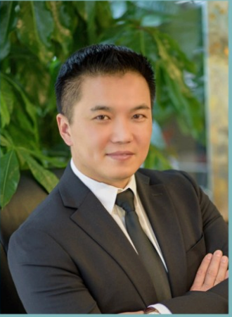

New York Real Estate Development
Ben Zhang · 张航东
Ben is my model for how to work. He brought me into New York real estate development and showed me what diligence truly looks like.
Through watching him work, diligence stopped being an abstract virtue and became something tangible. He was instrumental in helping me find my footing and build a life in New York.
About Ben Zhang. Ben Zhang, also known as Hang Dong Zhang, currently focuses primarily on real estate development in New York. His work is grounded in the practical demands of moving development projects forward and turning plans into completed buildings.